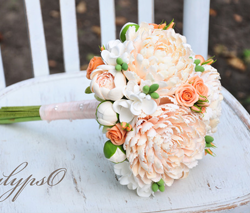

Поделки — это что-то сделанное своими руками из подручных материалов или того, что уже совсем не нужно для нашего обихода. Поделки, если так посмотреть, это вообще всё то, что нас окружает по сей день. Ведь это всё когда-то человек, хоть в одном экземпляре, но сделал своими руками. Но мир не стоит на месте и поэтому в наше время, большую часть всего нашего интерьера и того, что нас окружает, сделано машиной на заводах и фабриках. И поэтому в наше время понятие поделка — это то, что сделано своими руками.
Изготовитель поделок
Можно ещё много перечислять что у детей развивает изготовление поделок. В школьном возрасте начиная с первого класса, в школьной программе обучения, введён урок «Труда». Урок труда у учеников ведётся с 1-4 классы (начальная школа). На этом уроке школьники мастерят из подручного материала, например такого, как цветная бумага, картон, сухих листьев и т. д. Затем в среднем и старшем звене этот урок продолжается, но более углублённо и называется «Технология» и ведётся с 5-11 классы. На этом уроке ученицы учатся шить, вышивать и готовить. Взрослые люди тоже иногда прибегают к изготовлению поделок. Но это намного реже чем у маленьких детей. Взрослые из поделок в основном говорят всякие макеты парка, городов и т. д. Или же научные проекты, которые тоже требуют работы своими руками. == Материалы == Материалы для поделок могут быть самые разнообразные. А точнее из того, чего позволит ваша фантазия. Поделки можно делать из самых необычных вещей, например таких как: картошка, книга, ветки деревьев, крышки от банок или же сами стрелянные или пластмассовые банки. Эти предметы кажутся совершенно неприемлемы для изготовления поделок, но тем не менее это так. Например, из картошки можно сделать ежа, воткнув в него спички, или из бутылок сделать фонарик или вазу. Но всё же основные материалы для изготовления поделок это:
Изготовитель поделок
Можно ещё много перечислять что у детей развивает изготовление поделок. В школьном возрасте начиная с первого класса, в школьной программе обучения, введён урок «Труда». Урок труда у учеников ведётся с 1-4 классы (начальная школа). На этом уроке школьники мастерят из подручного материала, например такого, как цветная бумага, картон, сухих листьев и т. д. Затем в среднем и старшем звене этот урок продолжается, но более углублённо и называется «Технология» и ведётся с 5-11 классы. На этом уроке ученицы учатся шить, вышивать и готовить. Взрослые люди тоже иногда прибегают к изготовлению поделок. Но это намного реже чем у маленьких детей. Взрослые из поделок в основном говорят всякие макеты парка, городов и т. д. Или же научные проекты, которые тоже требуют работы своими руками. == Материалы == Материалы для поделок могут быть самые разнообразные. А точнее из того, чего позволит ваша фантазия. Поделки можно делать из самых необычных вещей, например таких как: картошка, книга, ветки деревьев, крышки от банок или же сами стрелянные или пластмассовые банки. Эти предметы кажутся совершенно неприемлемы для изготовления поделок, но тем не менее это так. Например, из картошки можно сделать ежа, воткнув в него спички, или из бутылок сделать фонарик или вазу. Но всё же основные материалы для изготовления поделок это: